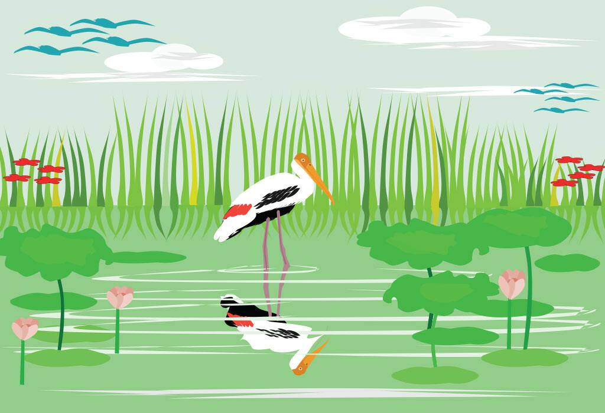

The stork and the Crab
2. The Stork and the Crab  Once upon a time, there lived a stork who used to pick fishes from the pond beside him, and eat them. However, as he grew older, he found it difficult to catch a single fish. In order to feed himself, he thought of a plan. He told the fish, frogs, and crabs, that some men are planning to fill the pond and grow crops, and that’s why there won’t be any fish in the pond. He also told them how sad he felt about this and that he will miss them all. The fish were sad and asked the stork to help them. The stork promised to take all of them to a bigger pond. However, he told them, “As I am old, I can take only a few of you at one go.” The stork would take the fishes to a rock, kill them, and eat them up. Every time he was hungry, he would take a few of them to the rock and eat them.There lived a crab in the pond, who wanted to go to the bigger pond too. The stork thought of eating the crab for a change and agreed on helping him. On the way, the crab asked the stork, “Where is the big pond?” The stork laughed and pointed to the rock, which was filled with fish bones. The crab realised that the stork would kill him, and so quickly thought of a plan to save himself. He caught the stork’s neck and did not let it go until the stork died.
Moral of the Story: Always have a presence of mind and act quickly when in danger